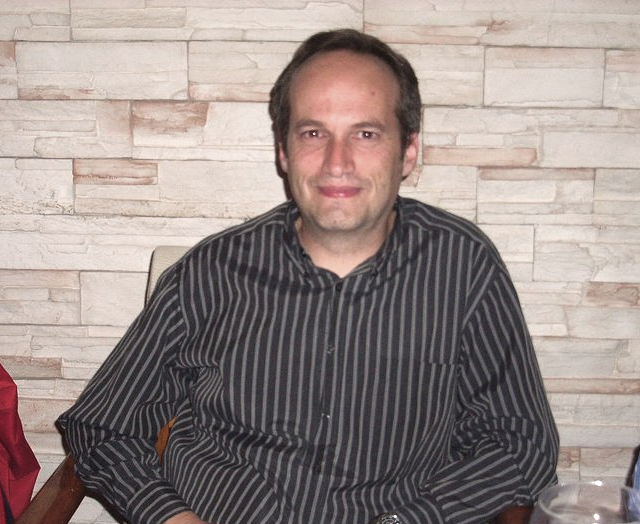

Javier López 
Profesor
Informática
Centro de Estudios Maderas València


Profesor
Informática
Centro de Estudios Maderas València


Estudié la carrera de Informática en la Univeersitat Politècnica de València cuando aún era Licenciatura. Casi toda mi vida profesional la he pasado dando clases, sobre todo a niños y personas mayores que querían iniciarse en la Informática. También formación a empresas, autónomos, cursos del Inem, etc. Ésta es mi ocupación actual.
También he pasado parte de mi vida profesional realizando mantenimiento informático, tanto software como hardware.
Tengo cierto dominio de HTML, CSS y Javascript, pero en ningún caso me puedo considerar un experto
También he realizado mis pinitos en PHP y MySQL, pero en ningún caso se me puede considerar un programador.
Tengo conocimientos de diseño gráfico, tanto vectorial (CorelDraw, InkScape) como retoque fotográfico (Photoshop, Gimp).
El campo donde puedo considerarme más experto es el de Ofimática, con alto conocimiento tanto del paquete comercial Office, como el software libre LibreOffice y OpenOffice
Gran aficionado a la montaña: senderismo, trail running
Me gusta el baloncesto, pero no lo practico, sobre todo por falta de altura
Muchas gracias por evaluar mi ejercicio. Me hubiera gustado hacer un estilo más elaborado, pero ando un poco escaso de tiempo.